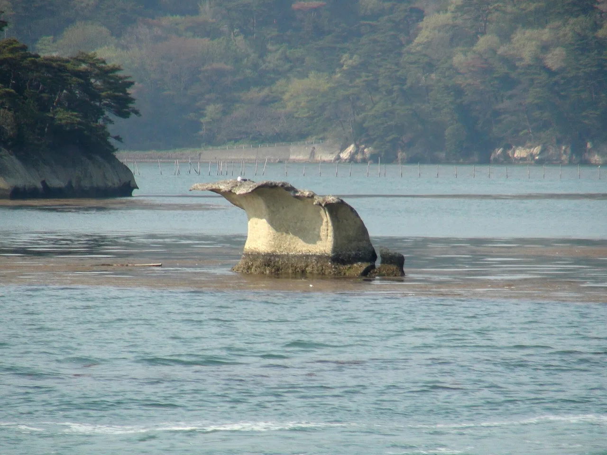

Miyagi คู่มือท่องเที่ยวสำหรับผู้เรียนภาษาญี่ปุ่น
สรุป
Miyagi ในภูมิภาค Tohoku ของญี่ปุ่น เป็นที่รู้จักจาก Matsushima Bay ซึ่งเป็นหนึ่งใน 'สามสถานที่ท่องเที่ยวที่สวยงามที่สุดของญี่ปุ่น' มีเกาะ 260 เกาะที่มีสน และเมืองหลวง Sendai ที่มีชีวิต ชีวา เรียกว่า 'เมืองของต้นไม้' เป็นที่รู้จักด้านเนื้อวัวตัดแม่หลาด (gyutan) และเทศกาล Tanabata ด้วยธงกระดาษขนาดใหญ่ทุกเดือนสิงหาคม
📍 ชม:
Matsushima Bay (松島) · 🥢 ลอง:
Gyutan (grilled beef tongue / 牛タン) ·
แหล่งที่มา
บ้านเกิดของเมือง Sendai ที่ชีวชีวะและ 'ทัศนียภาพสามอันยิ่งใหญ่' ของญี่ปุ่นที่ Matsushima Bay

Matsushima Bay — photo by Sakaori (talk), CC BY 3.0, via Wikimedia Commons
🍜 อาหาร ▰▰▱▱▱ 🏯 วัฒนธรรม ▰▰▱▱▱ 🏙 เมือง ▰▰▰▰▱ 🚄 การเดินทาง ▰▰▰▱▱ 🌿 ธรรมชาติ ▰▰▰▱▱
🥢 ลอง: Gyutan (grilled beef tongue / 牛タン) · 📍 ชม: Matsushima Bay (松島)
🗣 素晴らしい景色ですね subarashii keshiki desu ne
Miyagi มีศูนย์กลางอยู่ที่ Sendai ซึ่งเป็นเมืองที่ใหญ่ที่สุดใน Tōhoku ก่อตั้งโดยเจ้านายผู้โด่งดังชื่อ Date Masamune เกาะที่ปกคลุมด้วยต้นสน Matsushima Bay เป็นสถานที่ชมวิวคลาสสิกที่มีชื่อเสียง
ต้องไปดู
★ Matsushima Bay (松島)★ Zuiganji Temple (瑞巌寺)★ Sendai Castle Ruins / Aoba Castle (仙台城跡)💎 Naruko Onsen kokeshi painting (鳴子温泉のこけし絵付け)💎 Akiu Otaki Falls & Rairaikyo Gorge (秋保大滝・磊々峡)
- Matsushima Bay — เกาะเล็ก ๆ ที่ปกคลุมด้วยต้นสน
- อุโบสถ Zuihōden ของ Sendai
- เศษซากปราสาท Aoba Castle
- อ่างน้ำพุร้อน Naruko Onsen
PR วางแผนที่พัก
ลิงก์บางตัวเป็นลิงก์พันธมิตร เราอาจได้รับค่าตอบแทนโดยคุณไม่เสียค่าใช้จ่ายเพิ่ม เราแนะนำเฉพาะบริการที่เราใช้เอง
ต้องกิน
★ Gyutan (grilled beef tongue / 牛タン)★ Zunda mochi (ずんだ餅)★ Matsushima oysters (松島の牡蠣)💎 Seri nabe (せり鍋)💎 Abura-fu don (油麩丼)
Sendai มีชื่อเสียงเรื่องเนื้อวัวย่าง (gyūtan) และ zunda (น้ำเต่าหวาน)
การเดินทางและช่วงเวลาที่ดีที่สุด
การเดินทาง: Sendai อยู่ห่างจาก Tokyo ประมาณ 1 ชั่วโมง 30 นาที โดยรถไฟ Tōhoku Shinkansen ซึ่งเป็นเมืองใน Tōhoku ที่ง่ายที่สุดในการเข้าถึง
ช่วงเวลาที่ดีที่สุด: ตลอดปี Matsushima นั้นสวยงามในฤดูใบไม้ร่วง และเทศกาล Tanabata ของ Sendai จัดขึ้นในเดือนสิงหาคม
เรียนภาษาญี่ปุ่น
おすすめは何ですか？
Osusume wa nan desu ka? — "เนื้อวัวย่าง ซึ่งเป็นอาหารพิเศษของ Sendai"
คำท้องถิ่น
牛タン
gyū-tan — เนื้อวัวย่าง ซึ่งเป็นอาหารพิเศษของ Sendai
💡 รู้ไว้ดีนั่งเรือท่องเที่ยวสั้น ๆ รอบ Matsushima Bay เพื่อชมเกาะต่าง ๆ จากทะเล
PR วางแผนที่พัก
ลิงก์บางตัวเป็นลิงก์พันธมิตร เราอาจได้รับค่าตอบแทนโดยคุณไม่เสียค่าใช้จ่ายเพิ่ม เราแนะนำเฉพาะบริการที่เราใช้เอง